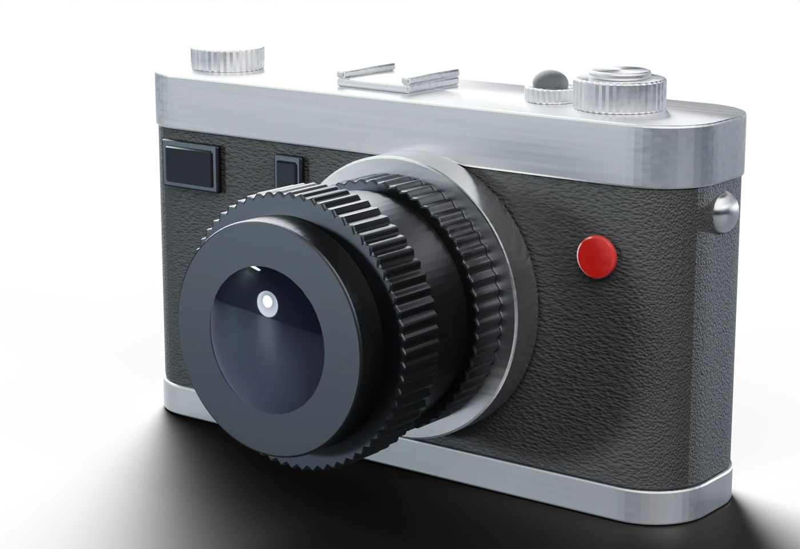

Instrument No. 1
CANDELA I
A full-manual rangefinder. Four materials, each doing exactly one job, and nothing on the body that does not move something.

Loading the instrument
Instrument No. 1
A full-manual rangefinder. Four materials, each doing exactly one job, and nothing on the body that does not move something.
01 — Metal
The top and base plates each leave the mill as a single piece, bead-blasted, then brushed along the long axis so the grain runs with the body rather than across it.
Every edge is broken by a 0.4 mm chamfer. That chamfer is not decoration. It is the line of light that tells you, at arm's length, whether a part was machined or moulded.
The grain runs with the body — never across it.
02 — Glass
Air-spaced and multi-coated, set 2 mm back inside the barrel so the front element is shaded by its own mount. The coating reads faintly violet off-axis.
Focus runs 0.7 m to infinity across 120 degrees of helicoid, damped with a grease specified by viscosity rather than by feel — because "feel" is not a number a second factory can hit.
"Feel" is not a number a second factory can hit.
03 — Leather
A full-grain wrap over the magnesium core, applied by hand and rolled into the radius rather than stretched across it, so the corners keep their grain instead of going glassy.
The pebble depth is a specification, not a finish: 0.35 mm. Deep enough to stay dry under a thumb, shallow enough not to hold grit.
0.35 mm — deep enough to stay dry under a thumb.
04 — Rubber
The shutter release is the only part of this camera designed to be pressed, so it is the only part that is not hard: a 3.6 mm vulcanised dome on a threaded collar.
Forty shore A, with the release point set at 1.6 N. Everything else on the body resists you. This one gives.
The only part on this camera designed to be pressed.
Specification
Editions
The mechanism does not change between editions. What changes is the plate finish, the wrap, and how long you wait.
Silver
S$4,800
Natural brushed aluminium plates, black grain wrap. The finish the instrument was designed in.
Black Chrome
S$5,200
Anodised plates over the same billet, deep charcoal wrap. Wears to brass at the corners, which is the point.
Atelier
S$7,400
Hand-engraved top plate, individually numbered, with a lens matched to the body at assembly rather than at random.
Register interest
Each run is small and allocated in the order registrations are received. We write once when your edition opens, and not otherwise.